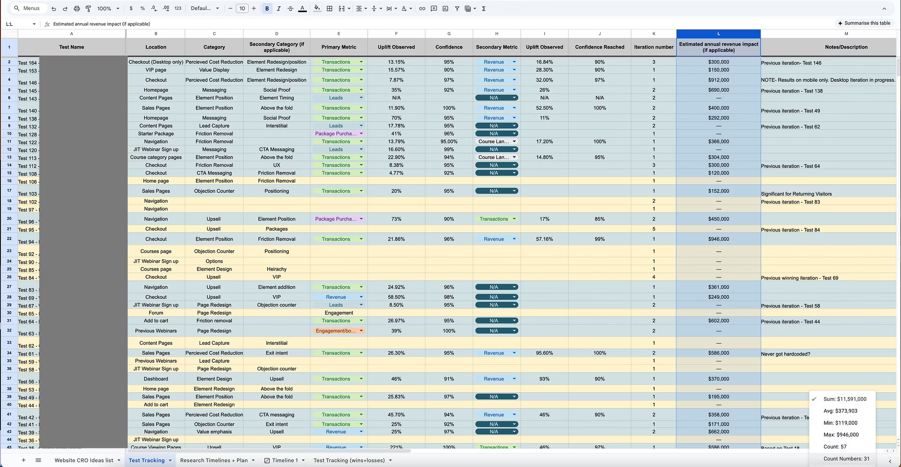

Free guide · CRO
Most businesses overpay 2 to 5x for customer acquisition by pouring everything into ads and ignoring the rest of the funnel. This guide walks through the four keys behind a real engagement that added $1.2M a year for one client, from the traffic they already had.
Before you start
So here's the thing
If you want more conversions and higher lifetime value. If you want to scale your ads without losing profitability. If you are sick of relying on marketing agencies who cannot tell you what is working and have no clear understanding of your customer. And if you want a clear roadmap for converting more customers at this scale. Then this guide is for you.
Quick background
The core thesis
Revenue = Traffic x Conversion Rate x Lifetime Value. Conversion rate and lifetime value are multipliers: improve either, and every dollar of traffic you already buy works harder.
The key idea is that there are four keys to a high-ROI CRO program. Done right, the program returns many times the time and resources you put into it. Skip a step and it will not return for you, because each key feeds the next.
The four keys
Why people buy, why they leave, and what a conversion improvement is actually worth to you.
Most teams improve design and call it CRO. The leverage lives elsewhere.
Research-led tests, ruthlessly prioritised, shipped continuously, with every win echoed across the whole business.
Not clicks, not engagement. The program is measured in your P&L, which is how this engagement reached $100k a month.
This is the biggest mistake marketers make when they start testing or try to improve conversion. You redesign landing pages without knowing why people are not buying in the first place (hint: it is usually not the design). You cannot scale your ads and keep blaming the platform or the creative instead of looking at the funnel, the money model, or your margins. You know the website needs updating, and "surely" all the updates in your head will be an upgrade.
It all leads to no clarity. You do not know which levers to pull to grow, progress slows, margins get squeezed, and even when the ad account looks great, the P&L does not match.
Do you know why people buy from you?
If you do not understand the core motivations, fears, and incentives behind your customers, you will never unlock scale. If you are thinking "I know what my customer wants" but have not actually asked them in the past year, here is why:
Perhaps you were your target customer when you started, and could genuinely put yourself in their shoes.
You may have got this far on a great market rather than great message-market fit.
The longer you work on the business, the more you lose the ability to see it as a customer without research.
Key 1 continued
There is a decent chance your website or landing pages are the bottleneck in your marketing. Any work here multiplies out to every ad dollar.
Say you spend $20,000 a month on ads at an average of $2 per click. That brings in around 10,000 visitors a month.
The same spend now delivers two and a half times the customers for no extra budget. On a $20k spend at a 1.8 ROAS pulling $36k in revenue, lifting the page from 2% to 5% takes that to roughly $90k. An extra $54k every month without buying more traffic, before you even touch AOV.
The point stands
You aren't improving conversion, you're improving design
You would be surprised how many stories I have heard about people investing tens or hundreds of thousands on new websites and landing pages, only for conversion to halve when it goes live.
Stop getting designers to design your landing page. It will look nice. It will not necessarily convert. Some of the ugliest pages I have seen convert the best. Good design can help, but it is almost never the biggest lever.
Month-long landing page projects and six-month website rebuilds move too slowly and cannot tell you which change did what. Small, iterative, measured changes are the way.
If you're sick of not being able to scale ads
Not every idea is a winner
Not every new landing page element or upgrade wins. That is exactly why we test. Plenty of marketers will tell you every page they have touched increased conversion and they have never had a bad outcome. That is not the case, for anyone. At least half of all ideas will not win, which is why you move through iterations fast and find the big levers.
Key 2 continued
The highest-leverage surfaces are the ones every buyer touches under pressure: the fold, the point of action, and the moment money changes hands.
Above the fold on your highest-traffic pages. Headline, subhead, call to action, proof. Wins here multiply across every traffic source you run.
Around the buy button is where doubt peaks. Risk reversal, guarantee, payment marks, and the answer to "what happens next" belong within sight of the CTA, not at the bottom of the page.
How the price is framed (payment plans, anchoring against the cost of doing nothing, what is included) often moves more than the price itself.
Order bumps and one-click upsells at the moment trust peaks. This is where LTV gets built, and it is the most under-tested surface in most funnels.
The wrong way
Change button colours. Run full-page redesigns. Hope for jackpots. Test random ideas with no research behind them. Random testing is gambling with a dashboard attached, and it is why most testing programs quietly die after a quarter.
The right way
Every incremental gain becomes the launchpad for the next. Each test is grounded in research, each result feeds the next hypothesis, and each win gets reused across the business. It is the same methodology the biggest ecommerce companies in the world run their growth on.
The four steps
Crawl the analytics, interview buyers, survey on-site, and find the hidden chokepoints. The research tells you where the revenue is leaking before you touch a thing.
Every idea ranked by how much revenue it can move, how strong the evidence behind it is, what it costs to ship, and its effect on lifetime value. The top of the list gets the test slots. Nothing ships on opinion.
While most competitors run one test a quarter, this program ran 180 tests across 18 months. A constant drumbeat of experiments means a constant drumbeat of insights, and losses get turned into learnings instead of sunk cost.
A winning insight becomes email subject lines, ad hooks, upsell offers, and customer messaging. One discovery multiplies everywhere. That is the compound effect.
The evidence
This is the live test-tracking sheet from the engagement: every test logged with its location, category, primary metric, observed uplift, confidence, and estimated annual revenue impact.

Homepage, sales pages, checkout, navigation, upsells, content pages. Each win building on the last.
Winning messages fed ads, email, checkout, and upsells, so the same research kept paying in channels we never touched directly.
Key 4 · Keep score in revenue
That $1.2M a year is the $100,000 a month in the title. It did not come from one silver bullet. It came from research-led wins on the surfaces that matter, shipped continuously, and echoed across the funnel until the compounding took over. While competitors' acquisition costs rose, this client's fell.
“Working with Impact Conversion has been epic. We’ve seen single wins that brought in six figures of additional revenue, which makes the ROI a no-brainer.”
Ben Silcock · Co-founder, High Performance Academy
Want this run on your funnel?
Book a free 15-minute intro call. We will walk your funnel, run the conversion math on your actual spend, and tell you straight whether a CRO program is worth running on your traffic. No pitch deck, no sales script.
Impact Conversion · Queenstown, New Zealand · impactconversion.com